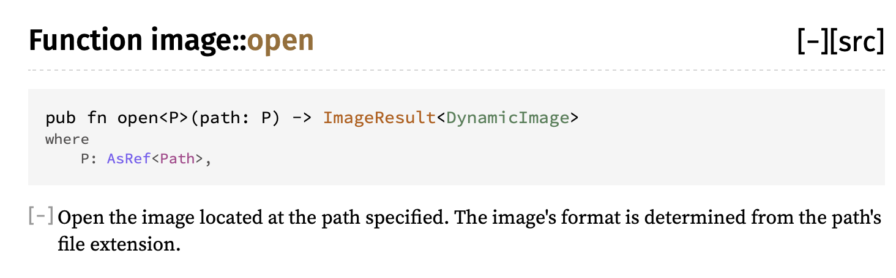
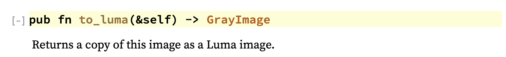

external dependencies, crates.io
Lets have our code load in an image from the filesystem. Searching in the standard library for images doesn't find anything, we could take a File to binary, but lets go to the community ecosystem, crates.io. Searching there for images finds a crate image with ~1mil downloads which seems to be pretty popular. image says it wants us to add it to our Cargo.toml dependencies section so lets do that.
[dependencies]
image = "0.22.1"
The Cargo toml manifest version field we learn Cargo uses semantic versioning which allows us to version and lock dependencies at the level of risk were comfortable with. From the spec:
Given a version number MAJOR.MINOR.PATCH, increment the:
MAJOR version when you make incompatible API changes,
MINOR version when you add functionality in a backwards compatible manner, and
PATCH version when you make backwards compatible bug fixes.
The Cargo chapter on dependencies explains more how to do this locking. The three digit version we used above is the same as a caret requirement as if we had type image = "^0.22.1". With this requirement Cargo is allowed to use any version it can satisfy between the range >=0.22.1 <0.3.0 Semver works different below and above 1.0 with the idea that theres more breaking churn below 1.0. So for a fictional image = "^1.2.3" Cargo would be allowed to find patches >=1.2.3 <2.0.0. Refer to the spec and the book for many more clarifying examples.
Loading the input image
Now in main.rs we can use this dependency. To start, let's just write the input to the output, passthrough, using the image create we looked at earlier.
use image;
let options = options().expect("Failed to parse command options!");
let input_image = image::open(&options.input_path)
.expect("Failed to open input image file");
input_image.save(&options.output_path)
.expect("Failed to save output image to file");
Repeatedly using the same variable name, called shadowing, is often even encouraged, as it means less messy temporary variables.
Converting to grayscale (or luma)
In our next section we're going to need an image in grayscale, with one value per pixel. Converting an RGB image to grayscale requires specific weights per component, but luckily the image create already implements this for us. We just need to figure out how to use it. Let's take a look at the docs again.

to_luma() method
From looking at the docs on image::open we now know that it returns a DynamicImage type. If we peek at the DynamicImage docs we'll find a function called to_luma(), which is exactly what we want. Notice it returns a different type, GrayImage.
Since types and abstractions in Rust don't incur overhead, it's pretty typically to use more types than less to represent different possible data structures and formats. This not only makes code clear to the reader, but also allows the compiler to help you enforce invariants.
For example, we can make our processing code later only accept GrayImage as input, which makes sure the caller has converted any inputs.

let input_image = image::open(&options.input_path)
.expect("Failed to open input image file");
let input_image = input_image.to_luma();
input_image.save(&options.output_path)
.expect("Failed to save output image to file");